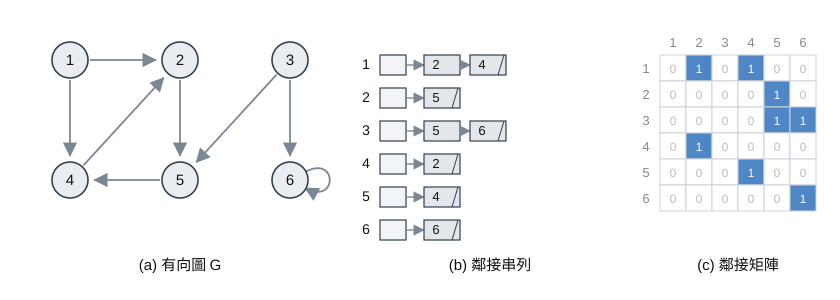
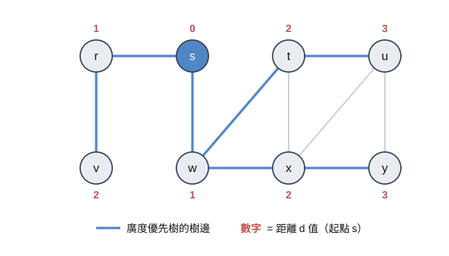
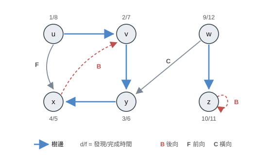

第一節 圖的表示法
一張圖 $G = (V, E)$ 通常有兩種常見的存法：鄰接串列（Adjacency List） 與 鄰接矩陣（Adjacency Matrix）

以上圖的有向圖為例（6 個頂點、8 條邊）：
- 鄰接串列：每個頂點 $u$ 作為一個串列，這裡可以稱為 $Adj[u]$，記錄所有從 $u$ 出發可直接到達的頂點，會一個一個串在原本的後面。所有串列的長度總和，在有向圖 (有方向限制) 中等於 $|E|$、在無向圖 (無方向限制) 中等於 $2|E|$，因此整體空間為 $\Theta(V + E)$
(我們最常用鏈結串列 Linked-List 來實作，通常在大一會介紹) - 鄰接矩陣：用一個 $|V| \times |V|$ 的矩陣 $A$ 來存，其中 $a_{ij} = 1$ 表示存在邊 $(i, j)$，否則為 $0$。空間為 $\Theta(V^2)$，與邊數和有沒有向無關
(我們最常用二維陣列來實作)
兩者的取捨如下：
| 面向 | 鄰接串列 | 鄰接矩陣 |
|---|---|---|
| 空間 | $\Theta(V + E)$ | $\Theta(V^2)$ |
| 查詢邊 $(u,v)$ 是否存在 | $O(\deg(u))$ (臨邊數) | $O(1)$ |
| 走訪 $u$ 的所有鄰居 | $O(\deg(u))$ (臨邊數) | $O(V)$ |
| 適合 | 稀疏圖（$\lvert E\rvert \ll \lvert V\rvert^2$） | 稠密圖 (需頻繁查單一邊) |
本章的 BFS 與 DFS 皆以鄰接串列表示，因此才能做到 $O(V + E)$ 的時間複雜度
第二節 廣度優先搜尋 BFS
BFS 的想法是一層一層往外長，會先走到離起點 $s$ 距離為 1 的所有頂點，再走訪距離到為距離為 2 的頂點，以此類推
通常為了做到這件事，我們必須在走到某個頂點 (距離 $x$) 後，就把與他相鄰的所有未走訪頂點 (距離 $x+1$) 都加入等待，等前面距離 $x$ 的點走完後，就會走到距離 $x+1$ 的點，通常我們會用佇列（Queue） 來實作
過程中每個頂點會有三種顏色，這只是用來說明，實作並不需要：
- 白色（WHITE）：尚未被發現
- 灰色（GRAY）：已被發現，但其鄰居還沒全部探索完（在佇列中，即上述例子）
- 黑色（BLACK）：已被發現，且已經走過
Pseudocode
1 | BFS(G, s) |
說明

$d[u]$ 記錄從 $s$ 到 $u$ 的最短距離 (邊數)，$\pi[u]$ 記錄 $u$ 在廣度優先樹上的父節點
每次都從 queue 取出最先放進，且還沒被 pop 的值 (即距離最小的灰色頂點) $u$，檢查它的每個鄰居 $v$：
如果 $v$ 還是白色，代表第一次被發現，把它的距離設為 $d[u] + 1$、父節點設為 $u$，塗成灰色後放進 queue。當 $u$ 的鄰居都處理完，就把 $u$ 塗黑 (這邊其實就 pop 掉就可以)
因為 queue 是先進先出 (FIFO)，距離小的頂點一定比距離大的先被取出來，所以 BFS 保證第一次走道 $v$ 的時候走的就是 $s$ 到 $v$ 的最短路徑。上圖以起點 $s$ 為例，每個頂點內標記的數字為 $d$ 值，粗線為廣度優先樹的邊，可以看到頂點是依 $0 \to 1 \to 2 \to 3$ 的距離一層層被發現
初始化每個頂點需 $O(V)$，每個頂點最多進出 queue 一次也是，所以 $V$ 個頂點是 $O(V)$，每個頂點被取出時會掃過自己的鄰接串列，所有鄰接串列的長度總和為 $\Theta(E)$，因此掃描鄰居的成本為 $O(E)$，整體時間複雜度為 $O(V) + O(V) + O(E) = O(2V + E) = O(V + E)$
最短路徑
建好廣度優先樹（也就是 $\pi$ 陣列）後，要印出從 $s$ 到 $v$ 的最短路徑，只要沿著父節點一路往回走即可：
1 | PRINT-PATH(G, s, v) |
先遞迴印出 $s$ 到 $\pi[v]$ 的路徑，回來後再印出 $v$ 自己，這樣輸出的順序就會是從 $s$ 到 $v$。如果某個 $v$ 的 $\pi[v] = \text{NIL}$ 且 $v \ne s$，代表 $v$ 從 $s$ 根本走不到，直接輸出 no path from $s$ to $v$
第三節 深度優先搜尋 DFS
BFS 是一層一層擴散，DFS 則是先一條路走到底，再回頭走另一條路，也就是說從一個頂點出發，沿著邊往下走，只要有還沒走過的鄰居就繼續走，直到走不下去才回頭一格，再嘗試往其他沒走過的鄰居走
教科書在 DFS 教我們的是在每個頂點都存兩個時間：
- 發現時間 $d[u]$：$u$ 第一次被發現 (塗成灰色)的時間
- 完成時間 $f[u]$：$u$ 的鄰居都探索完 (塗成黑色) 的時間
Pseudocode
1 | DFS(G) |
1 | DFS-VISIT(u) |
說明

$DFS(G)$ 的外層迴圈先把所有頂點初始化為白色，接著一個一個檢查每個頂點，只要遇到白色的就呼叫 DFS-VISIT 去走DFS-VISIT(u) 會先把 $u$ 塗灰然後記錄發現時間，然後繼續重複上面的步驟檢查每個白色鄰居，等所有鄰居都處理完，才把 $u$ 塗黑並記下完成時間
上圖每個頂點標記的 $d/f$ 即為發現時間與完成時間，粗線是樹的邊。由於每個頂點只會做 DFS-VISIT 一次 (第一次走過後就會塗灰，下次不再走)，初始化白色的點要 $O(V)$，而所有鄰接串列的掃描總和為 $O(E)$，所以時間複雜度同樣是 $O(V + E)$
其實從上面的這個做法就可以發現到，任意兩個頂點 $u$ 與 $v$，他們的區間分別是 $[d[u], f[u]]$ 與 $[d[v], f[v]]$，那麼不可能有一個點是比較早走到但比較晚結束的，或反之比較晚走到但比較早結束。這是因為 DFS 是後進先出 (LIFO)，你一定要先走完子節點的所有路徑，才可以確定你這個節點已經結束了
邊的分類
DFS 走訪過程中，可以依照探索邊 $(u, v)$ 時 $v$ 的顏色，把邊分成四類：
| 邊的種類 | 探索到 $(u,v)$ 時 $v$ 的顏色 | 意義 |
|---|---|---|
| 樹邊（Tree edge） | 白色 | $v$ 第一次由 $(u,v)$ 被發現，是森林中的邊 |
| 後向邊（Back edge） | 灰色 | $v$ 是 $u$ 的祖先，代表存在環 (因為 v 已經先走過但還沒結束，你就已經走回去了) |
| 前向邊（Forward edge） | 黑色，且 $d[u] < d[v]$ | $v$ 是 $u$ 的子孫，但不是樹邊 |
| 橫向邊（Cross edge） | 黑色，且 $d[u] > d[v]$ | 其餘情況，連接不同子樹或同層 |
上圖中的邊除了樹邊外，分別標記了 B (後向)、F (前向)、C (橫向)
這個分類非常有用，例如一張有向圖是有向無環圖 (DAG) 若且唯若 (if and only if) DFS 不會產生任何後向邊，白話講就是一個圖如果沒有環就是有向無環圖 (DAG)
總結
| 演算法 | 用途 | 資料結構 | 時間複雜度 |
|---|---|---|---|
| BFS | 無權圖單源最短路徑、分層走訪 | 佇列（Queue） | $O(V + E)$ |
| DFS | 走訪、時間戳記、邊分類 | 遞迴／堆疊（Stack） | $O(V + E)$ |
- BFS 用佇列、一層層擴散，適合求最短邊數；DFS 用遞迴（堆疊）、一路走到底，適合分析圖的結構
- DFS 的時間與邊分類是後續拓撲排序與強連通分量的基礎，無後向邊 $\Leftrightarrow$ DAG，是拓撲排序成立的條件
參考文獻
T. H. Cormen, C. E. Leiserson, R. L. Rivest, and C. Stein, Introduction to Algorithms, Second Ed., The MIT Press, 2001.